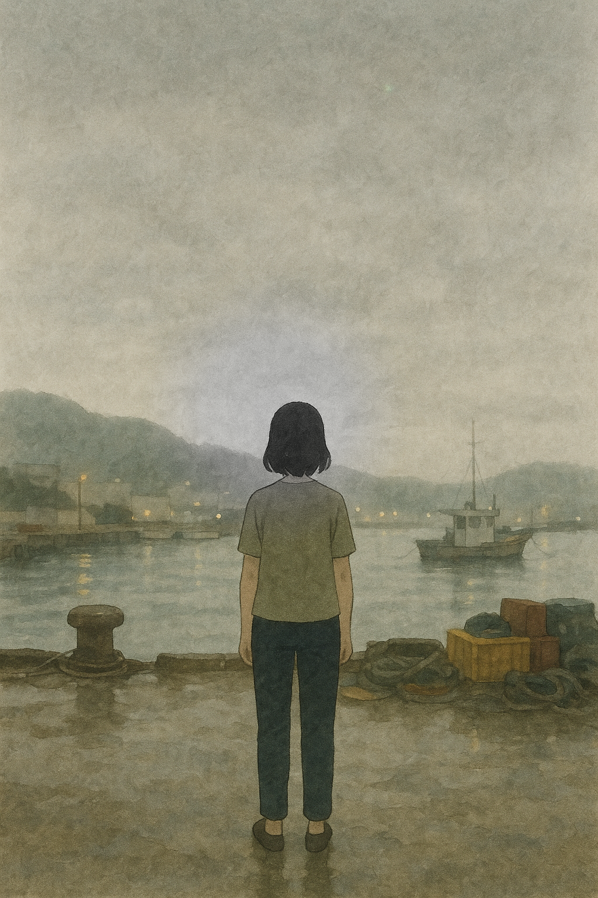
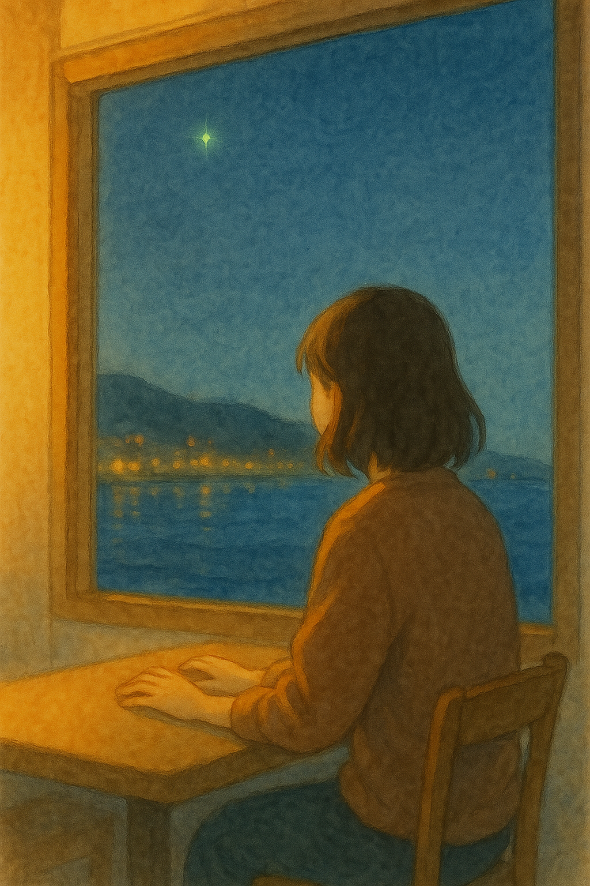

F5 ASSET CANDIDATE REVIEW — fragile_hope · hamel

❌ 기각 (v2) ❌ 기각
❌ 기각
 ✓ 채택 (v3)
✓ 채택 (v3)
W1-v3 — 위로형
"지쳐있는 나를 보듬어주고 싶어요"

❌ 기각 (v2)
❌ 기각
✓ 채택 (v3)
 F10:00–0:05
F10:00–0:05
 F20:05–0:10
F20:05–0:10

F30:10–0:15 F40:15–0:20
F50:20–0:30
v3 교체
F40:15–0:20
F50:20–0:30
v3 교체